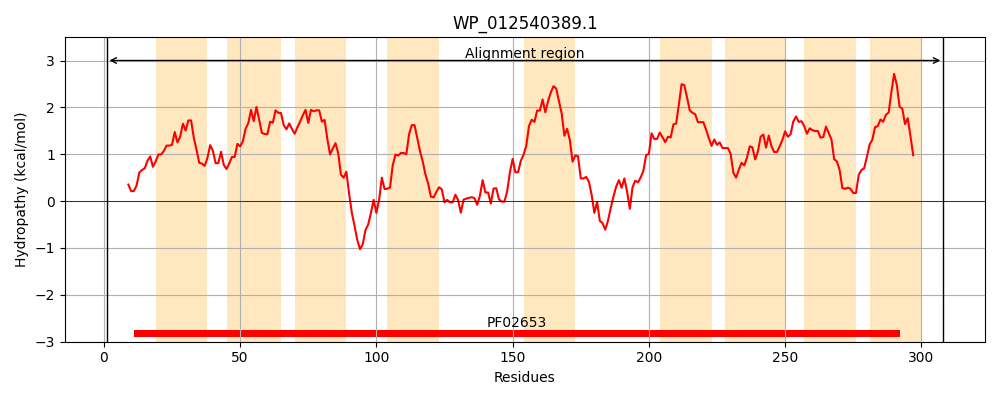
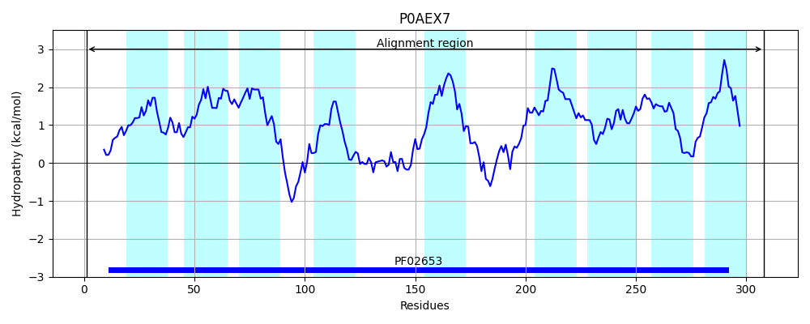
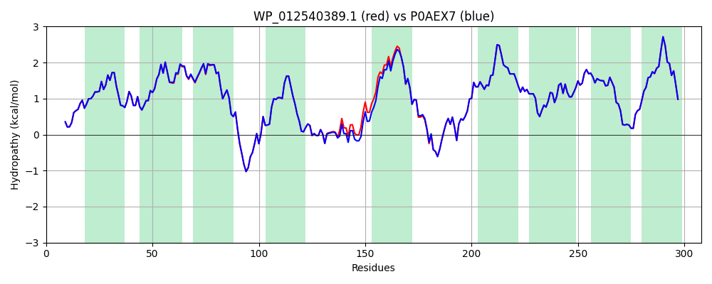

Hit Accession: P0AEX7
Hit TCID: 3.A.1.4.1
Hit Description: gnl|BL_ORD_ID|8798 gnl|TC-DB|P0AEX7|3.A.1.4.1 High-affinity branched-chain amino acid transport system permease protein livH - Escherichia coli.
Mach Len: 308
e:0.000000
Query TMS Count : 9
Hit TMS Count: 9
TMS-Overlap Score: 9.200000
Predicted Substrates:CHEBI:17191;L-isoleucine, CHEBI:25017;leucine, CHEBI:27266;valine, CHEBI:8089;phenylalanine, CHEBI:9800;tyrosine
BLAST Alignment:
Score: 1497 , Bit scores: 581 bits, E-value: 0.0e+00, Alignment length: 308, Percentage identity: 97
Query: 1 MSEQFLYFLQQMFNGVTLGSTYALIAIGYTMVYGIIGMINFAHGEVYMIGSYVSFMIIAALMMMGIDTSWLLVAAGFVGAIVIASAYGWSIERVAYRPVRNSKRLIALISAIGMSIFLQNYVSLTQGSRDVALPSLFNGQWIVGHSDSFSATITTMQLVIWVVTFIAMLALTLFIRYSRMGRACRACAEDLKMASLLGINTDRVIALTFVIGAAMAAVAGVLLGQFYGVINPYIGFMAGMKAFTAAVLGGIGSIPGAMIGGLILGIAEALSSAYLSTEYKDVVSFALLILVLLVMPTGILGRPEVEKV 308
MSEQFLYFLQQMFNGVTLGSTYALIAIGYTMVYGIIGMINFAHGEVYMIGSYVSFMIIAALMMMGIDT WLLVAAGFVGAIVIASAYGWSIERVAYRPVRNSKRLIALISAIGMSIFLQNYVSLT+GSRDVALPSLFNGQW+VGHS++FSA+ITTMQ VIW+VTF+AMLALT+FIRYSRMGRACRACAEDLKMASLLGINTDRVIALTFVIGAAMAAVAGVLLGQFYGVINPYIGFMAGMKAFTAAVLGGIGSIPGAMIGGLILGIAEALSSAYLSTEYKDVVSFALLILVLLVMPTGILGRPEVEKV
Sbjct: 1 MSEQFLYFLQQMFNGVTLGSTYALIAIGYTMVYGIIGMINFAHGEVYMIGSYVSFMIIAALMMMGIDTGWLLVAAGFVGAIVIASAYGWSIERVAYRPVRNSKRLIALISAIGMSIFLQNYVSLTEGSRDVALPSLFNGQWVVGHSENFSASITTMQAVIWIVTFLAMLALTIFIRYSRMGRACRACAEDLKMASLLGINTDRVIALTFVIGAAMAAVAGVLLGQFYGVINPYIGFMAGMKAFTAAVLGGIGSIPGAMIGGLILGIAEALSSAYLSTEYKDVVSFALLILVLLVMPTGILGRPEVEKV 308 | Protein Hydropathy Plots: |
|---|
|  |  |
Pairwise Alignment-Hydropathy Plot:
|
|---|
|  |